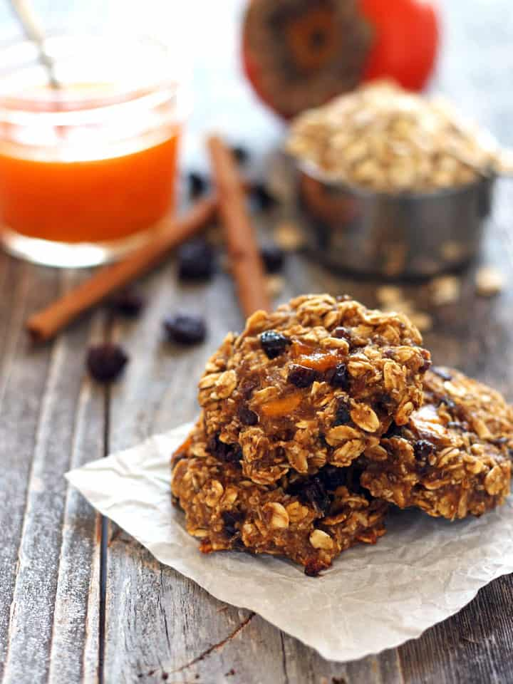

Persimmon Oatmeal Cookies

Description
A great fall cookie but can really be enjoyed any time of the year if there's a supply of persimmon pulp in the freezer!
Ingredients
- 1 ¾ cups rolled oats
- 1 ½ cups sifted all-purpose flour
- ½ cup English toffee-flavored baking bits (such as Heath®)
- 1 teaspoon baking soda
- 1 teaspoon salt
- 1 cup brown sugar
Steps
- Preheat oven to 350 degrees F (175 degrees C). Line baking sheets with parchment paper.
- Whisk oats, flour, toffee bits, baking soda, salt, nutmeg, cinnamon, and cloves together in a bowl.
- Beat brown sugar and butter together in a bowl with an electric mixer until creamy, 2 minutes. Beat in egg. Beat persimmon puree and vanilla into butter mixture.
- Mix flour mixture into persimmon mixture until dough is just moistened and no streaks of flour or oats remain. Drop spoonfuls of dough 1 1/2 inches apart onto ungreased baking sheets.
- Bake cookies in the preheated oven until slightly browned on the edges, 8 to 12 minutes. Cool on the baking sheet for 10 minutes before transferring to wire racks to cool completely.
Enjoy cooking!!!